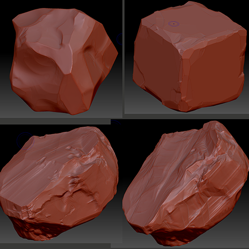

Lava Cave
I made this mostly to practice ZBrush, but also to practice my art direction and mood lighting. Since I'm not a great 3D modelling artist, I had to re-do the lava stone multiple times until I was happy with it. I also used EmberGen to generate smoke assets, and used some shaders to create lava, caustics and water. The whole thing was partly based off a concept I found online by Andrew Mar:
